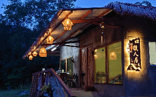
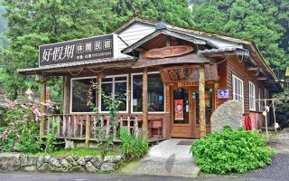
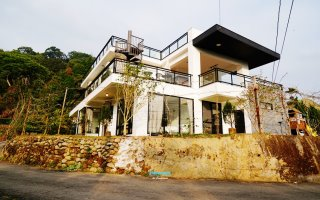

| 獵人居 好假期民宿 山間茶墅 | |
| 獵人居 | |
|  | 獵人居是一家位於阿里山鄉茶山村的特色民宿，隱身於山林之中，環境清幽恬淡，旁邊還有私人溪流景點，提供如同世外桃源般的獨特住宿體驗。民宿附近還有多處自然景點，包括青雲瀑布、富山瀑布及神秘的那瑪夏賞螢步道，非常適合喜愛大自然氛圍的家庭旅遊住宿。 地址：605嘉義縣阿里山鄉茶山村1鄰11號 資訊來源：獵人居 |
| 好假期民宿 | |
|  | 民宿的主要設施為木屋套房，牆壁和地板皆由木頭製成，散發著淡淡的木質香氣。儘管室內空間不大，但木屋前方擁有寬敞的空地，孩子們可以自由奔跑，盡情享受與大自然的親密接觸 地址：604嘉義縣竹崎鄉5-1號 資訊來源：好假期民宿 |
| 山間茶墅 | |
|  | 山間茶墅民宿位於一片茶園之中，擁有黑白交織的歐式建築外觀，使得這棟民宿格外引人注目。旅客可以在這裡享受遠離塵囂的寧靜氛圍，張開雙眼就能看到綠意盎然的茶園，季節一到還能欣賞滿天飛舞的螢火蟲，對喜愛大自然的旅客而言，是不容錯過的包棟選擇。 地址：603嘉義縣梅山鄉瑞里村幼葉林85號之1 資訊來源：山間茶墅 |